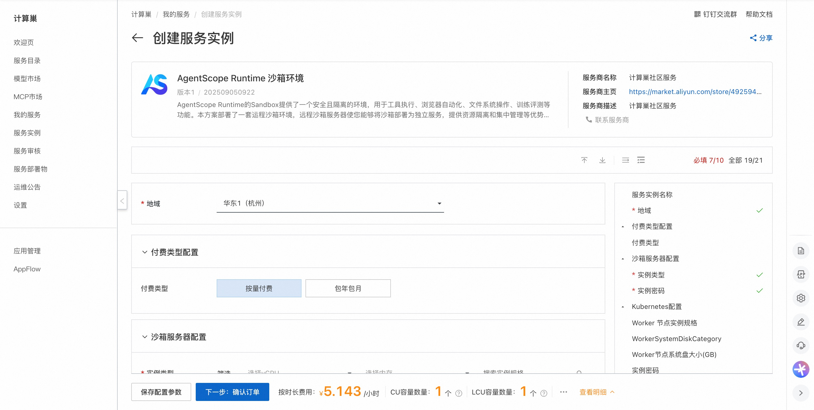
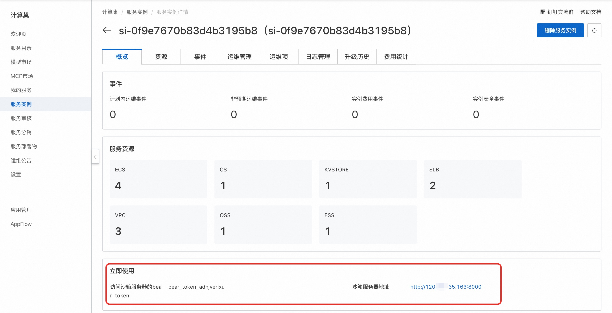
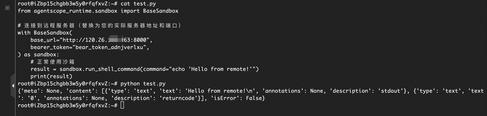
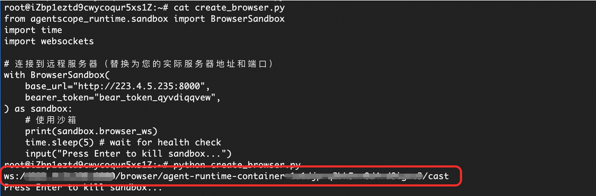
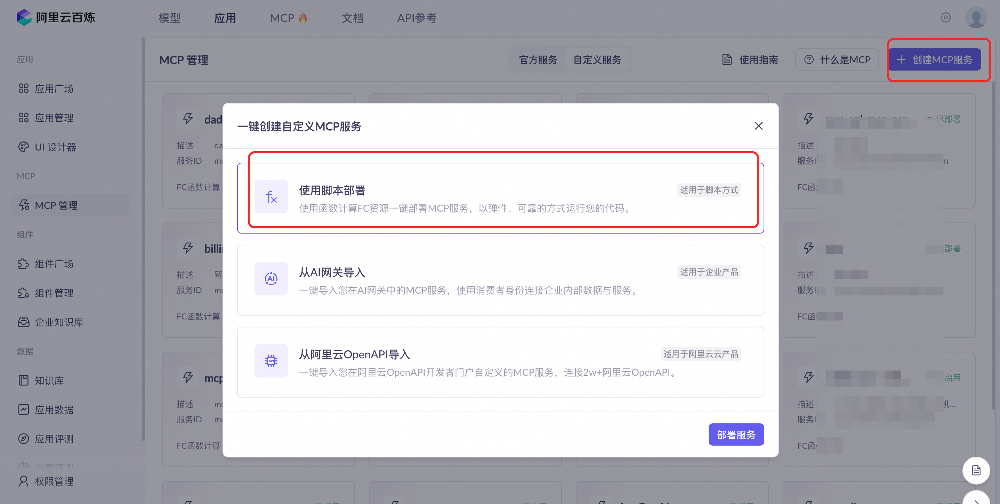
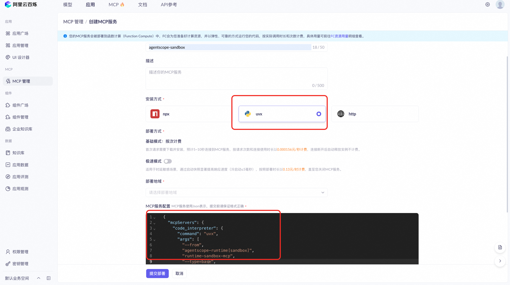
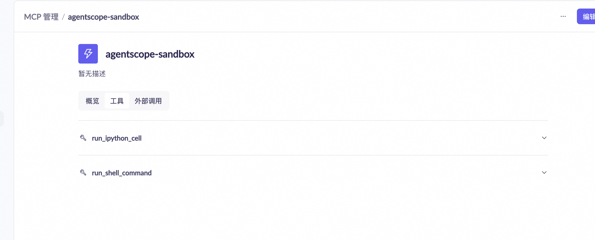
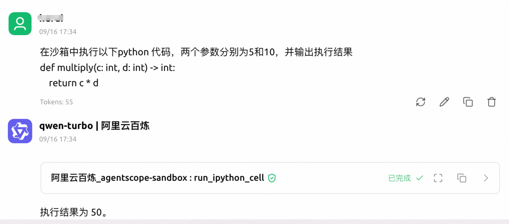

AgentScope Runtime 沙箱环境快速部署
概述
AgentScope Runtime的Sandbox提供了一个安全且隔离的环境，用于工具执行、浏览器自动化、文件系统操作、训练评测等功能。本方案部署了一套运程沙箱环境，远程沙箱服务器使您能够将沙箱部署为独立服务，提供资源隔离和集中管理等优势，您可以通过沙箱SDK连接到远程沙箱服务器。 访问AgentScope Runtime 官网查看详情。
计费说明
费用主要涉及：
- 所选vCPU与内存规格
- 系统盘类型及容量
- 公网带宽
- 所选的云数据库的规格
RAM账号所需权限
部署服务时，需要对部分阿里云资源进行访问和创建操作。因此您的账号需要包含如下资源的权限。 说明：当您的账号是RAM账号时，才需要添加此权限。
| 权限策略名称 | 备注 |
|---|---|
| AliyunECSFullAccess | 管理云服务器服务（ECS）的权限 |
| AliyunVPCFullAccess | 管理专有网络（VPC）的权限 |
| AliyunROSFullAccess | 管理资源编排服务（ROS）的权限 |
| AliyunCSFullAccess | 管理容器服务（CS）的权限 |
| AliyunROSFullAccess | 管理资源编排服务（ROS）的权限 |
| AliyunKvstoreFullAccess | 管理云数据库Tair（兼容 Redis）的权限 |
| AliyunRDSFullAccess | 管理云数据库服务（RDS）的权限 |
| AliyunComputeNestUserFullAccess | 管理计算巢服务（ComputeNest）的用户侧权限 |
部署流程
-
访问服务部署链接，按提示填写部署参数： 
-
参数填写完成后可以看到对应询价明细，确认参数后点击下一步：确认订单。 确认订单完成后同意服务协议并点击立即创建进入部署阶段。
-
等待部署完成后进入服务实例概览页, 可以看到沙箱服务器地址和访问沙箱服务器的bear_token。 
使用示例
沙箱类型为Python代码及Shell命令执行
- 远程连接沙箱服务器（您也可以在本机操作），参考官方文档 安装Agentscope Runtime的稳定版本，创建脚本并运行。 
示例脚本如下： ```python from agentscope_runtime.sandbox import BaseSandbox
# 连接到远程服务器（替换为您的实际沙箱服务器地址和bear_token） with BaseSandbox( base_url="沙箱服务器地址", bearer_token="沙箱服务器bear_token", ) as sandbox: # 正常使用沙箱 result = sandbox.run_shell_command(command="echo 'Hello from remote!'") print(result) ```
沙箱类型为Web浏览器自动化
- 远程连接沙箱服务器（您也可以在本机操作）参考官方文档 安装Agentscope Runtime的稳定版本，创建脚本并运行。  示例脚本如下： ```python from agentscope_runtime.sandbox import BrowserSandbox import time import websockets
# 连接到远程服务器（替换为您的实际沙箱服务器地址和bear_token） with BrowserSandbox( base_url="沙箱服务器地址", bearer_token="沙箱服务器bear_token", ) as sandbox: # 正常使用沙箱 print(sandbox.browser_ws) time.sleep(5) # wait for health check input("Press Enter to kill sandbox...") ```
- 创建出沙箱后，会得到一个websocket 连接，通过这个websocket 连接，可以访问browser_use的功能，可以复制得到的websocket 连接，替换到以下示例HTML中547行的baseWsUrl 中，访问此html，就可以访问沙箱的浏览器。
在地址栏可以访问网址

通过MCP调用沙箱服务
- 沙箱环境部署成功后，可以创建对应的MCP Server, 通过MCP的方式调用沙箱服务。这里介绍通过百炼的方式创建MCP Server，并使用的流程。在百炼中创建MCP 服务器，使用脚本创建的方式 
- 配置MCP 服务器的信息，安装方式选择uvx, MCP 服务配置使用以下Json， 其中base_url为沙箱服务器地址，bearer_token为沙箱服务器的bear_token。 
{
"mcpServers": {
"code_interpreter": {
"command": "uvx",
"args": [
"--from",
"agentscope-runtime[sandbox]",
"runtime-sandbox-mcp",
"--type=base",
"--base_url=http://沙箱服务器地址:8000",
"--bearer_token=xxx"
]
}
}
}
- 创建MCP Server成功后，可以查看MCP Server 的工具列表 
- 在MCP Client 中配置成功后，Agent 就可以通过MCP Server 调用沙箱服务了。比如下图，通过沙箱执行python 脚本  更多用法请参考官方示例。